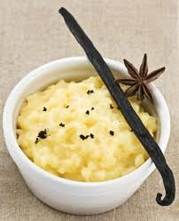

Riz au lait vanille
Ingredients
4×
- 1 l de lait
- 100 g de sucre
- 1 gousse de vanille
- 100 g de riz rond
- 2 c. à s. de Maïzena

Préparation
Étape 1
Dans une grande casserole, verser 1 l de lait, 100 g de sucre et 1 gousse de vanille fendue (ou du sucre vanillé). Porter à ébullition.
Étape 2
Ajouter 100 g de riz rond et cuire 30 à 35min à feu doux.
Étape 3
Diluer 2 c. à s. de Maïzena dans un peu de lait, l’ajouter et laisser 1 à 2min sur le feu. Laisser refroidir.